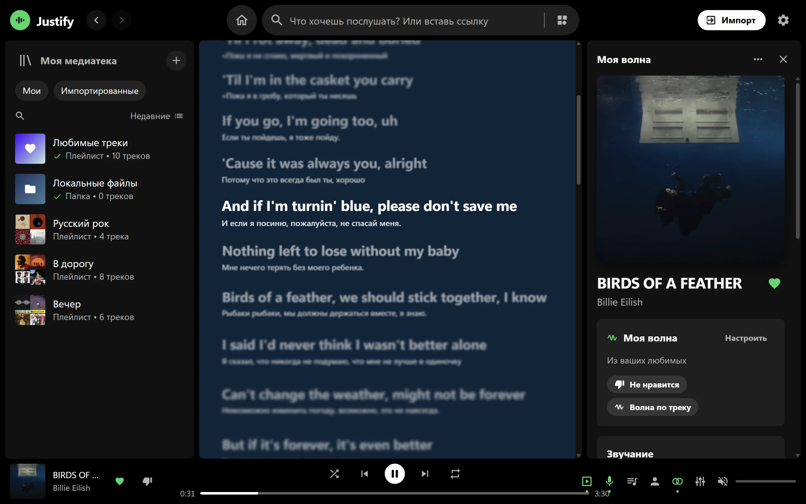
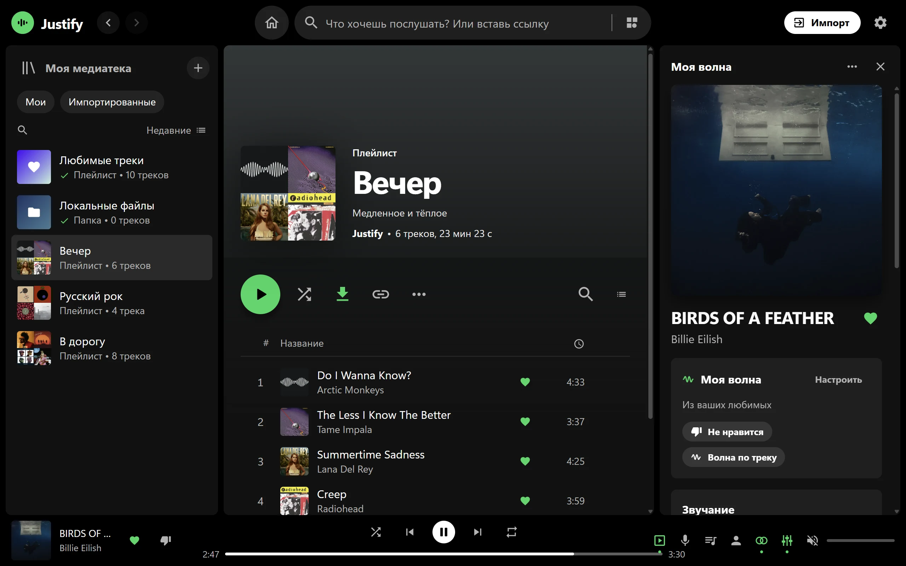
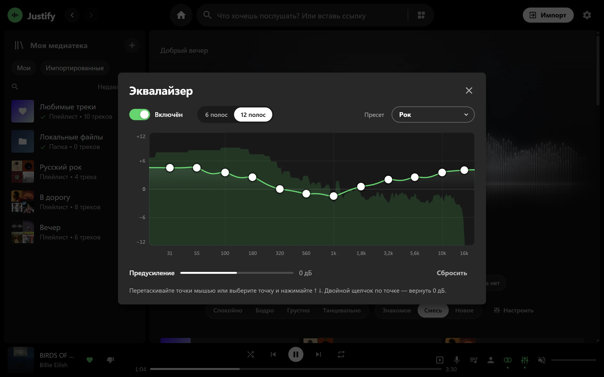
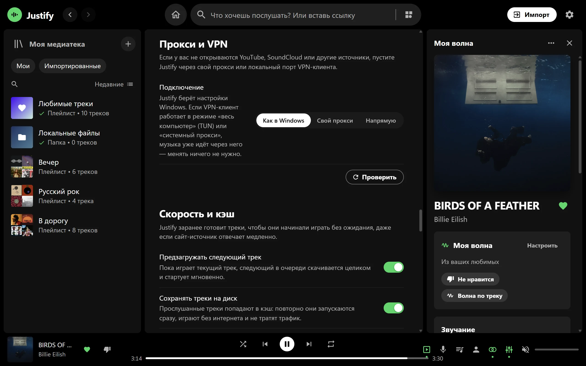
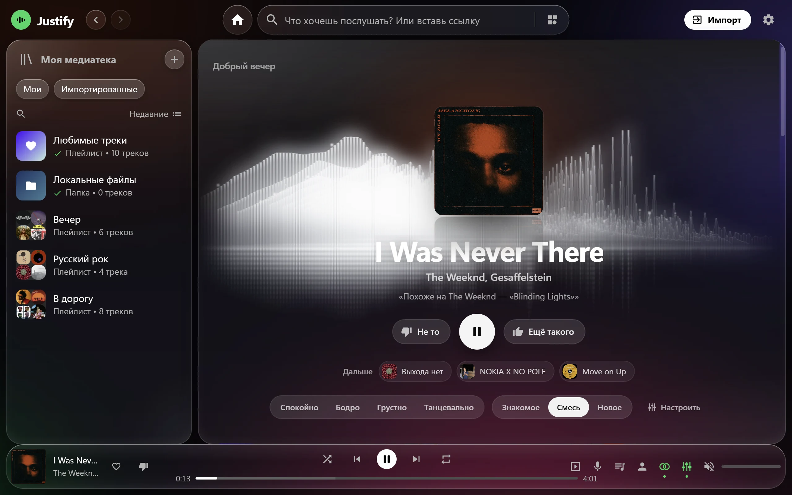

01 · МОЯ ВОЛНА
Бесконечный поток под ваше настроение
Отметьте «Ещё такого» или «Не то», и волна поймёт вас за пару треков. Настроение и режим «Знакомое · Смесь · Новое» переключаются одной строкой.
- Спокойно · Бодро · Грустно · Танцевально
- Ctrl+M
Justify ищет треки сразу в YouTube Music, SoundCloud, Зайцев.нет и Audius и играет их в одном окне. «Моя волна», тексты песен с переводом и офлайн уже внутри.
Моя волна
Волна подбирает следующий трек по вашим лайкам и истории и объясняет выбор: «Из ваших любимых», «Похоже на The Weeknd». Спектр за обложкой двигается вместе с музыкой.
Поиск
Введите название или вставьте ссылку, и Justify найдёт трек в YouTube Music, SoundCloud, Зайцев.нет и Audius. Если один сервис не отвечает, плеер быстро переключится на другой.
Плейлисты из Яндекс Музыки и Spotify переносятся кнопкой «Импорт», а свои файлы можно просто перетащить в окно.
Возможности
01 · МОЯ ВОЛНА
Отметьте «Ещё такого» или «Не то», и волна поймёт вас за пару треков. Настроение и режим «Знакомое · Смесь · Новое» переключаются одной строкой.
02 · ТЕКСТЫ ПЕСЕН
Строки подсвечиваются в такт музыке, а под каждой иностранной строкой стоит русский перевод. Любую строку можно отправить другу картинкой с обложкой.

03 · ОФЛАЙН
Нажмите «Скачать» у плейлиста, и он будет играть в метро, в самолёте и на даче. Скачанное не удаляется, даже когда кэш заполнен, а новые песни в плейлисте докачиваются сами.

04 · ЭКВАЛАЙЗЕР
6 или 12 полос, 22 пресета и своя кривая: тяните точки мышью или стрелками. Живой спектр показывает, что происходит со звуком.

05 · ПРОКСИ И VPN
Укажите свой прокси или локальный порт v2rayN, Hiddify, NekoBox прямо в настройках. Кнопка «Проверить» покажет, какие источники доступны, а если нет, то почему.

И ещё
Стеклянные панели с размытием и бликами. Фон за ними меняет цвет вслед за обложкой.

Друзья видят трек, обложку с живым эквалайзером и строку из песни. Кнопка «Слушать» открывает тот же трек.
Скажите «Джасти, включи Земфиру», и трек заиграет. Речь распознаётся прямо на компьютере, без интернета.
Друзья по игре «Тише» видят, что вы слушаете, и включают то же одним нажатием. Лайки и плейлисты переносятся между компьютерами.
Медиаклавиши клавиатуры управляют плеером, а Ctrl+M и Ctrl+E включают волну и эквалайзер.
Новая версия скачивается в фоне и ставится при выходе. Если она не запустится, Justify вернёт прошлую.
Установка
01
Один файл Justify-win64.zip, около 170 МБ.
02
Например, в «Документы». Устанавливать ничего не нужно.
03
Если Windows покажет SmartScreen, нажмите «Подробнее», затем «Выполнить в любом случае».
Обновления
Раз в несколько часов плеер проверяет новую версию, скачивает её в фоне и ставит, когда вы его закрываете. Ничего переустанавливать не нужно.
Вопросы
Да. В нём нет рекламы, подписки и платных функций. Если захотите сказать спасибо, можно поддержать автора на Boosty.
Justify ищет и включает треки из открытых каталогов YouTube Music, SoundCloud, Зайцев.нет и Audius. Ещё он играет файлы с вашего компьютера: просто перетащите их в окно.
Нет, всё работает сразу. Аккаунт нужен, только если хотите переносить лайки и плейлисты между компьютерами и видеть, что слушают друзья. Для входа подходят ник и пароль из игры «Тише».
Это фильтр SmartScreen: он предупреждает о программах без платной цифровой подписи. Нажмите «Подробнее», затем «Выполнить в любом случае». Все версии Justify лежат в открытых релизах на GitHub.
Откройте Настройки → Прокси и VPN и укажите свой прокси или локальный порт v2rayN, Hiddify, NekoBox. Кнопка «Проверить» покажет, что открывается. Если YouTube просит подтвердить, что вы не бот, возьмите cookies из браузера в Настройки → YouTube.
Нажмите «Импорт» вверху окна. Можно вставить ссылку на плейлист, войти в Яндекс Музыку или просто вставить список песен текстом. Justify найдёт те же треки и сложит их в плейлист.
На вашем компьютере, в папке %APPDATA%\Justify. Резервную копию можно сделать в Настройки → Данные → Экспорт.
Никак: он сам проверяет новые версии, скачивает их в фоне и ставит, когда вы закрываете плеер. Проверить вручную можно в Настройки → Обновления.
Пока только для Windows 10 и 11, 64 бит.
Justify бесплатный и без рекламы. Если он вам нравится, поддержите автора любой суммой на Boosty: это помогает выпускать новые версии. Та же кнопка есть в приложении, внизу настроек.
Бесплатный плеер для Windows. Скачайте, распакуйте и слушайте.